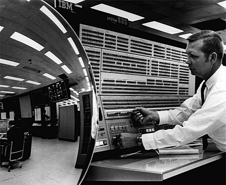

ARPANET
Licklider, a psychologist and computer scientist, put out the idea in 1960 of a network of computers connected together by "wide-band communication lines" through which they could share data and information storage. Licklider was hired as the head of computer research by the Defense Advanced Research Projects Agency (DARPA), and his small idea took off.
By 1966, MIT researcher Lawrence G. Roberts had developed a plan for "ARPANET", a computer network designed to withstand power outages, even if a few of the computers were inactive. The first ARPANET link was made on October 29, 1969, between the University of California and the Stanford Research Institute. Only two letters were sent before the system crashed, but that was all the encouragement the computer researchers needed.
More universities and hosts were added to ARPANET as the system stabilized, and by 1981, there were over 200 hosts on the system. A number of other computer networks sprung up in the wake of ARPANET, including the Merit Network, CYCLADES, and the first international packet network, IPSS. However, with so many differing systems, something had to be developed to integrate them all into one. Robert Kahn of DARPA and Vinton Cerf of Stanford University worked together on a solution, and in 1977, the internet protocol suite was used to seamlessly link three different networks. Using this new protocol for data transmission, the National Science Foundation created NSFNET in 1986, capable of handling 1.5 megabits per second, which replaced the now-outdated ARPANET.
Packet switching—today the dominant basis for data communications worldwide—was a new concept at the time of the conception of the ARPANET. Prior to the advent of packet switching, both voice and data communications had been based on the idea of circuit switching, as in the traditional telephone circuit, wherein each telephone call is allocated a dedicated, end to end, electronic connection between the two communicating stations. Such stations might be telephones or computers. The (temporarily) dedicated line is typically composed of many intermediary lines which are assembled into a chain that stretches all the way from the originating station to the destination station. With packet switching, a data system could use a single communication link to communicate with more than one machine by collecting data into datagrams and transmitting these as packets onto the attached network link, as soon as the link becomes idle. Thus, not only can the link be shared, much as a single post box can be used to post letters to different destinations, but each packet can be routed independently of other packets.[7]
The earliest ideas for a computer network intended to allow general communications among computer users were formulated by computer scientist J. C. R. Licklider of Bolt, Beranek and Newman (BBN), in April 1963, in memoranda discussing the concept of the "Intergalactic Computer Network". Those ideas encompassed many of the features of the contemporary Internet. In October 1963, Licklider was appointed head of the Behavioral Sciences and Command and Control programs at the Defense Department's Advanced Research Projects Agency (ARPA). He convinced Ivan Sutherland and Bob Taylor that this network concept was very important and merited development, although Licklider left ARPA before any contracts were assigned for development.[8]
Sutherland and Taylor continued their interest in creating the network, in part, to allow ARPA-sponsored researchers at various corporate and academic locales to utilize computers provided by ARPA, and, in part, to quickly distribute new software and other computer science results.[9] Taylor had three computer terminals in his office, each connected to separate computers, which ARPA was funding: one for the System Development Corporation (SDC) Q-32 in Santa Monica, one for Project Genie at the University of California, Berkeley, and another for Multics at the Massachusetts Institute of Technology. Taylor recalls the circumstance: "For each of these three terminals, I had three different sets of user commands. So, if I was talking online with someone at S.D.C., and I wanted to talk to someone I knew at Berkeley, or M.I.T., about this, I had to get up from the S.D.C. terminal, go over and log into the other terminal and get in touch with them. I said, "Oh Man!", it's obvious what to do: If you have these three terminals, there ought to be one terminal that goes anywhere you want to go. That idea is the ARPANET".[10]
Meanwhile, since the early 1960s, Paul Baran at the RAND Corporation had been researching systems that could survive nuclear war and developed the idea of distributed adaptive message block switching.[11] Donald Davies at the United Kingdom's National Physical Laboratory (NPL) independently invented the same concept in 1965.[12][13] His work, presented by a colleague, initially caught the attention of ARPANET developers at a conference in Gatlinburg, Tennessee, in October 1967.[14] He gave the first public demonstration, having coined the term packet switching, on 5 August 1968 and incorporated it into the NPL network in England.[15] Larry Roberts at ARPA applied Davies' concepts of packet switching for the ARPANET.[16] The NPL network followed by ARPANET were the first two networks in the world to use packet switching,[17][18] and were themselves connected together in 1973.[19][20] The NPL network was using line speeds of 768 kbit/s, and the proposed line speed for ARPANET was upgraded from 2.4 kbit/s to 50 kbit/s.[21]
By mid-1968, Taylor had prepared a complete plan for a computer network, and, after ARPA's approval, a Request for Quotation (RFQ) was issued for 140 potential bidders. Most computer science companies regarded the ARPA–Taylor proposal as outlandish, and only twelve submitted bids to build a network; of the twelve, ARPA regarded only four as top-rank contractors. At year's end, ARPA considered only two contractors, and awarded the contract to build the network to BBN Technologies on 7 April 1969. The initial, seven-person BBN team were much aided by the technical specificity of their response to the ARPA RFQ, and thus quickly produced the first working system. This team was led by Frank Heart. The BBN-proposed network closely followed Taylor's ARPA plan: a network composed of small computers called Interface Message Processors (or IMPs), similar to the later concept of routers, that functioned as gateways interconnecting local resources. At each site, the IMPs performed store-and-forward packet switching functions, and were interconnected with leased lines via telecommunication data sets (modems), with initial data rates of 56kbit/s. The host computers were connected to the IMPs via custom serial communication interfaces. The system, including the hardware and the packet switching software, was designed and installed in nine months.